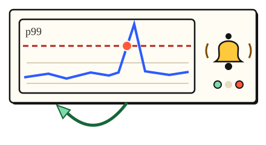

Stay up · 3 minutes
Seeing problems early
You cannot fix what you cannot see: metrics, alerts and a way back.
Open this lesson
Three questions
When something breaks you need: is it broken (metrics and alerts), where (logs and traces), and how do I undo it (a safe rollback). Without them, problems are found by angry users, 30 minutes later (approx.).
Alerts that matter
Detection and repair both consume the incident budget. Page on user impact and count the time saved by a useful alert.
Try the idea
A bad release will go out at noon. Set up watching and a quick way back.
Key numbers
- No monitoring
- ≈ 30 min to notice. approx.
- Metrics and alerts
- ≈ 3 min to notice. approx.
- One-click rollback
- ≈ 5 min to fix. versus 30 min by hand, approx.
Check your reasoning
Think through these questions before opening the lesson. In the game you can test the idea and compare your reasoning.
- What does an alert tell you?
- What speeds up the fix of a bad release most?
- Why not alert on every metric?
The key point
Watch what users feel, tell a human fast, and keep a way back.
Practise this idea
- Medium
Fleet telemetry
A freight company has 150,000 trucks that each send a batch of sensor readings every 30 seconds. Dispatchers watch live maps and analysts run reports. You must take in every batch, keep a month of detail cheaply, and survive the moments when thousands of trucks come back online at once.
- Medium
Factory sensors
A factory has thousands of machines, each sending readings many times a second. Engineers open charts of the last hour and last month, and an alarm must fire within seconds when a reading goes out of range. The data grows without end.
- Hard
Metrics platform
Thousands of services send a stream of measurements: CPU, errors, latency. You store them, draw the dashboards and fire the alerts. The platform watching everyone else must never go down first, and one customer creating millions of new series can ruin the bill.